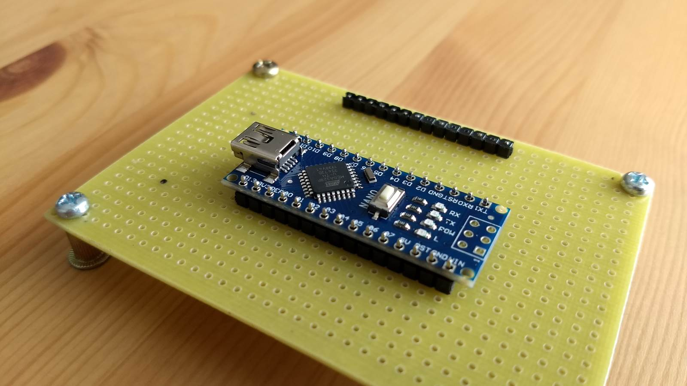
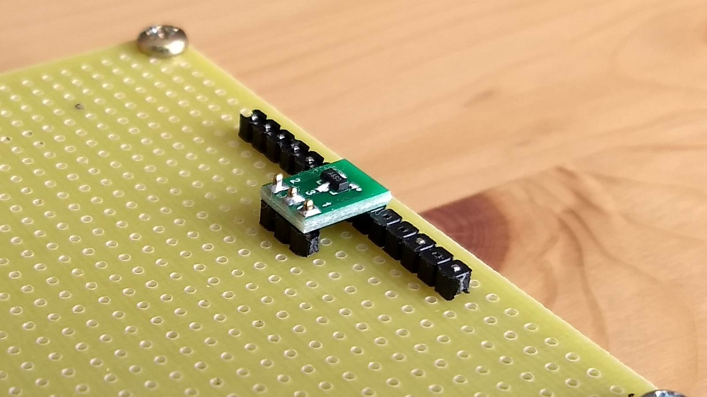

-
A simple jig to keep PCBs in place while soldering male header pins. Caters for single row header as well.
 
-
Use stackable ice cube trays to hold resistors, transistors, diodes, etc. Much cheaper than storage drawer cabinets.
Search for components in a spreadsheet to get the cube coordinates. You can get Excel for Android phone too.


-
Scavenge broken-down scanners or junk photocopiers for parts, especially the scanning lens. The magnification power is fantastic
and most useful for checking solder joints.